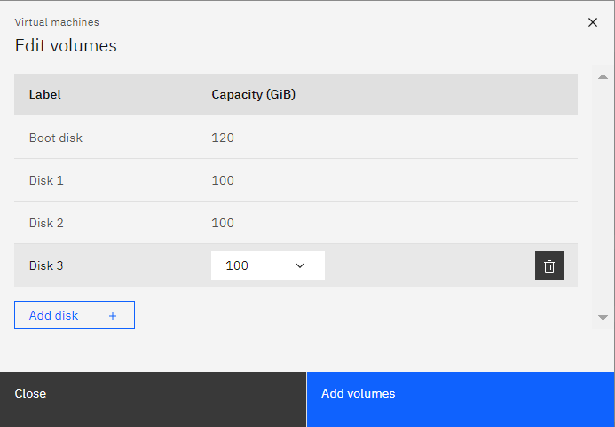
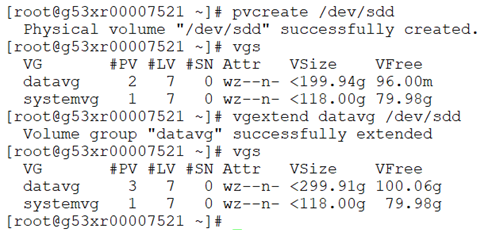

CPC Disk Addition
Goal¶
This article helps you to create and add a new virtual disk to an existing Linux virtual machine on CPC.
Procedure¶
Here are the steps for adding a new virtual disk on a Linux virtual machine.
📌 No downtime is required for this activity
Step: 1
Search for the respective host in the CPC portal based on the IMAP or project ID and click it to open further.

Step: 2
Once we got the host screen, check the list of existing disk volumes. Use the "Edit Volumes" option for adding new volume to the host.

Step: 3
The Edit Volumes screen will be like this. In that click the Add Disk + option.

Step: 4
Select the required disk space and use the Add Volumes option for volume addition.

Step: 5
Post that you will be prompted with the CPC request ID.

Step: 6
In sometime, you will be receiving a task successfull completion mail. Once you recieved such mail please proceed with the below steps.
If you didn't receive such mail then please reach to the #cirrus-platform-support slack channel further assistance.
Step: 7
Please execute the below command. If you are able to see the newly added disk then the CPC disk addition request is succeeded.
If not able to see the disk then reach to the #cirrus-platform-support slack channel for support.

Use below commands for expanding the added disk space to the volume group and then the required size to the logical volume.
